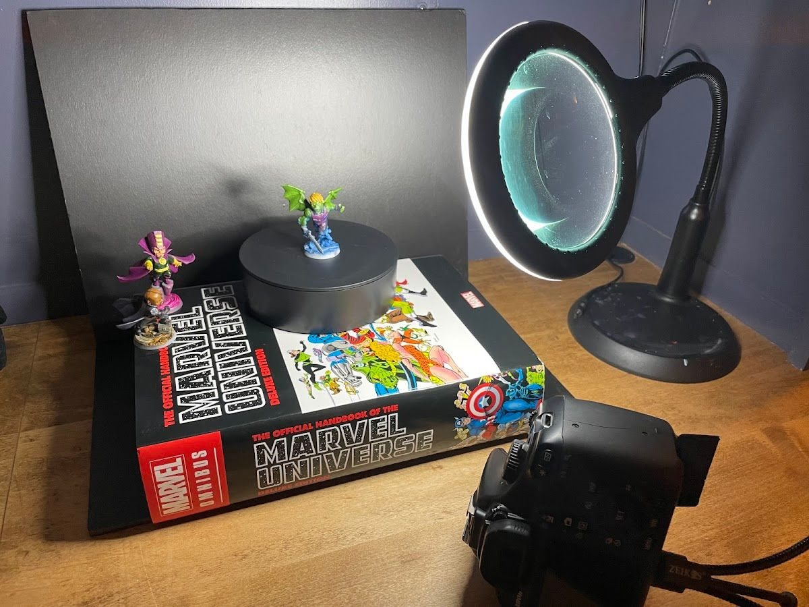

I shoot my finished minis on a Canon Rebel T5i from 2013. No Wi-Fi, no Bluetooth, no modern conveniences. I can only assume the "i" stands for internet. But it has a decent sensor and just enough manual control to make tiny plastic heroes look their best, so if you've got an old camera in a closet, give it a second life. I shoot with the kit lens that came with it, and that's fine. To be honest, phone cameras are pretty fine for this now too.
Why this matters
You don't need a DSLR to take good mini photos (the budget setup proves that). If you have an old one gathering dust, it's a fun way to get more manual control over depth and exposure. But the camera is the smallest part of it. Light and stability are what make the difference, whether you're shooting on a Rebel or a phone.
The short version
The kit lens is fine, and so is a phone. Put the camera on a tripod, use a timer, stop the lens down for depth, and write your settings down so you're not guessing every time. Skip the flash: get better light on the mini and lower the exposure instead. Upgrade gear only when a specific limitation is obvious.
The settings card I started with
With my light box setup, I made myself a quick card of settings for both white and dark backgrounds. Having numbers written down saves a ton of trial and error, even if (as you'll see below) I'd change part of this one now.

| White background | Black background | |
|---|---|---|
| Light box | Full brightness | Dim or off |
| ISO | 200 to 400 | 100 |
| Aperture | f/22 | f/22 |
| Shutter | 1/6 second | 1/200 second |
| Flash | Off | On |
Why f/22? Minis are tiny and close to the lens, so depth of field is razor thin. Stopping way down keeps more of the mini sharp from front to back. The tradeoff is less light, which is why the white-background shutter speed is so slow.
Why a tripod and timer? At 1/6 of a second, any hand shake is blur. The tripod holds it, and the timer means pressing the shutter doesn't shake it either.
What I'd change now: skip the flash
The black-background column leaned on the flash, and honestly, the flash isn't great. These days I'd rework that recommendation:
- Get better light on the mini instead. A brighter, steadier light source aimed at the mini (light box, daylight lamp) does the job the flash was doing.
- Lower the exposure. Bring the exposure down until the background drops to black and the highlights stop blowing out, then check it against what the mini looks like in real life.
Better light plus lower exposure gets you a dark background and a mini that still looks like your paint job.
Phone for video, DSLR for stills
I still shoot all my video on my iPhone. Trying to shoot video on this DSLR is pain and suffering. For stills, I like the depth and crispness I get from the Rebel, but a phone in a good setup gets you most of the way there.

When better gear actually helps
The order I'd upgrade in, and only when you hit the limit:
- Light and stability first. A daylight source and a tripod or mug. This is most of the difference.
- A better background. For dark shots, black velvet was one of the cheapest upgrades I've made.
- A light box. Even, soft light that doesn't need rearranging every shoot.
- Glass, maybe. The kit lens is fine, and I still use mine. If you really want to fill the frame with a mini, a true macro lens (the Canon EF-S 60mm f/2.8 Macro is a common pick for these bodies) or a 50mm lens plus extension tubes will get you closer.
The point is an upgrade path, not a shopping list. If your photos are soft because the camera moved, a macro lens won't fix it.
Checklist
- Tripod (or something solid) plus a timer
- Aperture stopped down (around f/16 to f/22)
- Settings written down for each background
- Room lights off, light box or daylight on
- No flash: more light on the mini, lower exposure
- Crop afterward instead of forcing the lens closer
Next: make dark backgrounds truly black with velvet instead of foam.